Data publicării: 12.05.2018
Autor articol: Adrian Iftene
Introducere
Ingineria socială reprezintă o amenințare care se extinde și amenință existența și buna funcționare a organizațiilor. Folosind ingineria socială un atacator poate lua cunoștință de informații esențiale despre afacere, care sunt vitale pentru organizație și prin aceasta amenință organizația. Pentru a preveni tentativele de fraudă socială, organizațiile trebuie să-și educe angajații în legătură cu tehnicile de fraudă prin ingineria socială care pot fi utilizate pentru obținerea de informații. Prin urmare, educația pentru securitatea informației are nevoie de noi abordări educaționale pentru a face față amenințărilor.
O soluție la această problemă este utilizarea unui sistem de automatizare care oferă angajaților cunoștințe despre o amenințare dificil de identificat. Pentru a înțelege dacă un chatbot este o soluție posibilă pentru a educa utilizatorii (Bjornhed, 2009) a efectuat o investigație cu privire la aplicabilitatea acestei abordări. Studiul se bazează pe o analiză, care compară educația tradițională în domeniul securității care se bazează pe citirea unui text informativ scris, cu utilizarea unui chatbot care simulează o încercare de fraudă cu scopul de a fura identitatea cuiva. Educația cu chatbotul constă în a expune la o încercare de fraudă ce vizează identitatea cuiva într-un mediu controlat și apoi să ofere o explicație relativ la ceea ce s-a întâmplat.
Chatbotul a fost dezvoltat cu o componentă ce încearcă să fraudeze, componentă care arată ca o abordare normală a cercetării de piață, cercetarea pieței în acest caz având întrebări care adună informații care sunt importante pentru furturile de identitate.
Rezultatul studiului arată că ar putea fi posibil să se utilizeze un sistem automat pentru educarea în atacurile de fraudă bazate pe ingineria socială. Cu toate acestea, este nevoie să se rezolve mai multe probleme majore, înainte de a folosi această abordare pe scară largă.
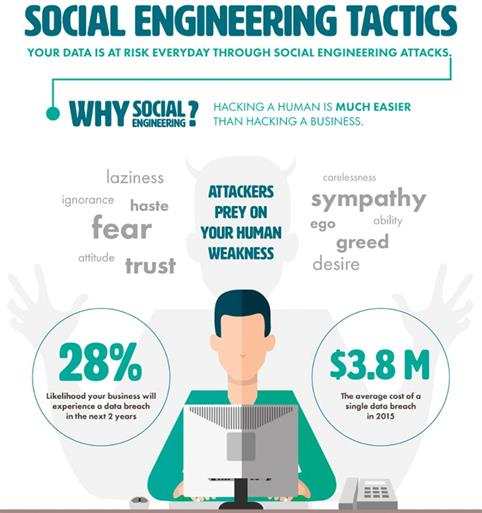
Starea domeniului
Atacurile ce folosesc ingineria socială devin tot mai frecvente pentru organizații și utilizatori. Atacurile de tip inginerie socială pot fi folosite pentru spionaj sau pentru crime economice și alte infracțiuni, în cazul în care utilizatorii au cunoștințe care pot fi folosite într-o infracțiune. Harl (1997) definește ingineria socială a fi “… arta și știința de a face oamenii să se conformeze dorințelor voastre”. Ingineria socială poate fi, de asemenea, explicată prin accesul la informațiile personale la care o persoană nu ar trebui să aibă acces. Utilizatorii sunt supuși ingineriei sociale în primul rând din cauza lipsei de conștientizare a tipurilor de fraudă la care se expun prin divulgarea acestor informații. Problema este că persoanele atacate nu au cunoștință despre atacurile de tip ingineria socială, care încearcă să le obțină datele personale pentru a le folosi mai târziu (Mitnick și Simon, 2002).
Frauda de tip inginerie socială este o problemă care nu este izolată doar în țările mari, precum SUA sau Marea Britanie. Astăzi, problema există peste tot, iar ziarele și televiziunile ni le prezintă frecvent. În Suedia, ziarul Dagens Nyheter a relatat în 2008 despre un bărbat fără adăpost care a folosit o identitate coreeană pentru a obține echipamente electronice scumpe. Un alt exemplu din ziarul Guardian (2006), din Marea Britanie, prezintă un incident care arată cât de ușor este să colectezi informații personale. O bucată de hârtie, o carte de îmbarcare, care a fost aruncată într-o coș de gunoi într-un tren, poate să ne spună numele pasagerului și traseul pe care acesta călătorește. Cartea de îmbarcare ar putea de asemenea să spună că pasagerul avea acces la clasa business, iar numărul de zbor frecvent, care permite cumpărarea de bilete cu reducere poate fi găsit pe card. Folosind aceste informații a fost posibilă autentificarea în contul pasagerilor și obținerea informațiilor personale ca număr de pașaport, data nașterii și naționalitate. În România, în 2010 era la modă phishing-ul, crearea de pagini similare cu ale unor bănci (de regulă) și cererea prin e-mail, sms, completarea unor formulare cu datele personale ale celui atacat.
Inginerie socială
Ingineria socială este un domeniu de cercetare în domeniul securității informațiilor. Ingineria socială aparține, de asemenea, altor domenii de cercetare din domeniul sociologiei, psihologiei și criminologiei (Nohlberg, 2008). Un inginer social are cunoștințe foarte bune despre cum să citească sentimentele unei persoane atunci când vorbește cu ea. Acest lucru oferă cunoștințe importante inginerului social în cazul în care acesta obține informații pe care le va folosi după aceea (Mitnick și Simon, 2002). Pentru a obține informațiile, inginerul social utilizează o varietate de tehnici, care sunt explicate pe scurt în acest capitol.
Concepte
Termenul de inginerie socială este nou în domeniul securității, însă tehnica ingineriei sociale este veche. Deoarece amenințările sunt ceva obișnuit pentru utilizatorii din cadrul organizațiilor, trebuie să precizăm că soluțiile tehnice pentru securitate sunt inutile în cazul amenințărilor bazate pe ingineria socială. Toate tehnicile de securitate care se aplică într-o organizație sunt de cele mai multe ori realizate din punct de vedere tehnic, prin implementarea firewall-urilor, a parolelor și a altor soluții care ne asigură siguranța aplicațiilor, a datelor și a echipamentelor hardware pe care le folosim (Mitnick și Simon, 2002), (Kajava și Siponen, 1997). Ingineria socială este o zonă în care mulți utilizatori nu au cunoștințe. Ingineria socială este descrisă de Harl (1997) ca fiind “… arta și știința de a face oamenii să se conformeze dorințelor voastre”. Atacatorul folosește cea mai vulnerabilă componentă a omului, mintea, atunci când agresorul atacă (Harl, 1997) și (Sasse et al, 2001). Ingineria socială poate fi împărțită în următoarele tipuri:
Phishing-ul
Phishing este cea mai utilizată metodă de atac astăzi. Tehnica a fost folosită pentru o perioadă cu un succes destul de mare. Diferența dintre phishingul (atacul pe computer) și ingineria socială (atacul pe bază de om) este că phishingul este mai degrabă o tehnică care vizează obiective multiple (Agenția de Poștă și Telecomunicații Suedeză, 2009), (Serviciul de Poliție Suedeză, 2009) (Bancpost, 2008). Scopul phishingului este de a obține informații prin falsificare. Această tehnică poate fi limitată prin utilizarea tehnicilor care sunt construite în browserele web (Microsoft, 2007).
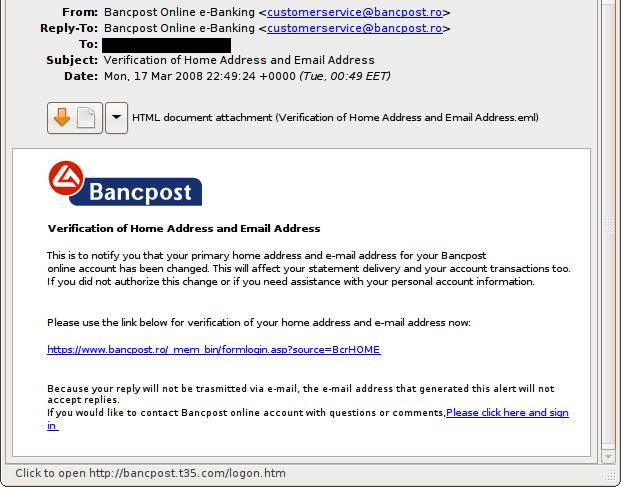
Spear phishing
Spear phishing-ul (pescuitul cu sulița) este un atac concentrat care pare să vină de la oameni care-l cunosc pe cel atacat și într-un anumit context. În cazul în care persoana atacată este angajată într-o organizație, atacul de tip spear phishing poate părea că provine dintr-o sursă din interiorul organizației și prin aceasta pare autentic și e greu de deosebit de un atac din exterior (Microsoft, 2007).
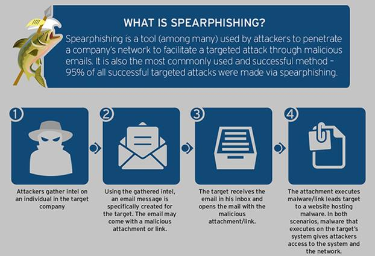
Dumpster diving
Dumpster diving (dumpingul de scufundări) este un element vital al ingineriei sociale, acesta venind cu o tehnică proprie. Când atacatorul colectează informații înainte de a face un atac, coșul de gunoi ar putea fi o sursă importantă pentru a găsi informații despre cele pe care vrea să-l atace. Căutând prin coșul de gunoi al celui pe care vrea să-l atace și prin coșul de gunoi al organizației, pot fi găsite informații importante, cum ar fi facturile și alte informații utile care pot fi folosite într-un atac asupra celui vizat sau chiar asupra organizației (Long, 2008).
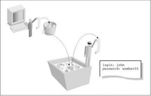
Inginerie socială inversă
Ingineria socială inversă are loc atunci când persoana pe care dorim s-o atacăm face abordarea inițială și oferă atacatorului informațiile pe care acesta le dorește. De exemplu, biroul de suport în caz ca un utilizator are nevoie de ajutor are acces la toate informațiile și nu trebuie să ceară parola sau codul de utilizator. Un atac de tip inginerie socială inversă creează o situație, promovează o soluție și oferă asistență la cerere (Microsoft, 2006), (Granger, 2001). Un exemplu din lumea reală, care poate fi găsit în “Secret & Lies by Schneier” (2000), este un hacker care a publicat fluturași pe panoul de informații al companiei, anunțând un nou număr de telefon pentru biroul de suport (numărul fiind de fapt numărul lui personal). Utilizatorii au utilizat acest număr de telefon atunci când au avut probleme cu calculatorul personal din cadrul companiei. După ce problema era rezolvată, hackerul sugera utilizatorului să instaleze un mic program care să-l ajute pe viitor la prevenirea problemelor. După ce programul era descărcat de pe internet și instalat, hackerul avea acces total la calculatorul utilizatorului.
Abordare personală
O abordare bazată pe om este cea mai simplă modalitate de a efectua un atac, abordarea se bazează pe relații umane și înșelăciune (NIST, 2003). Cu ajutorul intimidării, convingerii și asistenței, atacul poate fi realizat cu ușurință.
Intimidarea: Folosind puterea autorității pentru a forța o țintă să se conformeze unei cereri.
Persuasiune: Este metoda de bază pentru ingineria socială: atacatorul folosind impersonalitatea, conformitatea, difuzarea responsabilității și prieteniei, poate obține ușor informații importante despre un utilizator.
Asistență: atacatorul poate oferi ajutor prin intermediul unor informații pe care le cere de la utilizator, dar poate dura ceva timp.
Abordările acestea reușesc de cele mai multe ori deoarece utilizatorii cred că persoana cu care vorbesc este sinceră și de încredere (Mitnick și Simon, 2002), (Microsoft, 2006).
Chatbotul folosit pentru a ajuta utilizatorii să înțeleagă ce este un atac de tip inginerie software
Obiectivele avute de (Bjornhed, 2009) au fost de găsi un scenariu de atac adecvat și de a-l implementa cu ajutorul unui chatbot. Pentru a găsi scenariul de atac adecvat autorul a avut mai multe discuții cu specialiști din domeniu și a analizat literatura de specialitate. Pentru atingerea obiectivului este necesar să se implementeze cunoștințele dobândite în obiectivul anterior. Pentru a implementa chatbotul autorul a construit diagramelor de flux care modelează fluxul discuțiilor și interacțiunilor în scenariul de atac. Graficele de flux au modelat fluxul preferat și problemele așteptate și neașteptate, care pot fi întâlnite (Pressman, 2005). După modelarea chatbotului autorul a căutat un motor text-to-speech, care să-i dea un caracter real acestuia și astfel să aibă un prim prototip pe care să-l poată evalua.
Infracțiunea ce implică ingineria socială este cea care are impact asupra cetățenilor. În general, astfel de probleme nu sunt considerate ca fiind probleme în Suedia, dar chiar și aici există cazuri în care au fost raportate furturi de identitate. În Suedia, nu este interzis să obții informații despre identitatea altcuiva, dar este interzis să folosești identitatea altei persoane. Experții în acest domeniu au explicat ce informații sunt necesare pentru a considera că avem de-a face cu furtul de identitate și de ce aceste informații sunt importante într-un caz ca acesta. Următoarele informații sunt importante pentru a considera că avem de-a face cu furtul de identitate pentru o persoană:
- Venit anual al acesteia;
- Angajatorul;
- Adresa unde locuiește persoana;
- Banca unde are conturi utilizatorul;
- Dobânzile pe care le primește;
- Dacă persoana are o carte de credit;
- Ce fel de card de credit;
- Comportamentul la cumpărături.
Pentru a identifica un scenariu care poate fi folosit în planificarea unei fraude cu ajutorul unui chatbot, există câteva limitări de care trebuie ținut cont. Chatbot-ul nu poate ține cont de sentimentele pe care utilizatorul le oferă în timpul conversației. Acest lucru oferă o limitare în modul în care se poate face atacul. În general, există o interacțiune umană între atacator și utilizator.
În interacțiunea dintre victimă și atacator, atacatorul reacționează și se adaptează la emoțiile, credința sau suspiciunea pe care victima o are în timpul interacțiunii. Simțurile atacatorilor spun cât de departe pot merge pe parcursul discuțiilor cu victima. În cazul în care victima este pasivă, ar putea fi dificil să se obțină toate informațiile care se doreau să se obțină de la victimă, iar soluția este de a face un pas înapoi și de a nu forța victima. Aceasta înseamnă că abordările personale sunt greu de simulat.
Alte metode de inginerie socială, cum ar fi spear phishingul și ingineria socială inversă, sunt, de asemenea, limitate pentru a fi utilizate cu un chatbot. Pentru a obține funcționarea chatbot-ului, conversația normală este singura metodă de lucru. Prin punerea întrebării și cu speranța că utilizatorul va răspunde la întrebări. O altă problemă care apare este aceea pe care ar trebui să se stabilească frauda, care este scopul acesteia.
Pentru a descrie scenariul, au fost utilizate ciclul de înșelăciune realizat de (Nohlberg și Kowalski, 2008). Diagramele de flux care descriu ciclul de atac pot fi vizualizate în Figura 5. Urmărind acest plan chatbotul încearcă ca prin discuțiile pe care le are să obțină cât mai multe din informațiile considerate mai sus a fi informații ce țin de furtul de identitate.
Rezultate
Autorul a realizat mai multe chestionare cu întrebări pentru a afla care este opinia utilizatorilor despre această abordare în care este folosit un chatbot. Rezultatul fuzionat din sondaj arată că nu se poate determina în mod concludent că chat-ul este o metodă educațională mai bună decât citirea unui text informativ.
Cu toate acestea, rezultatul arată că utilizarea unui chatbot ca metodă educațională este bună și învățământul tradițional ce constă în citirea unui text informativ este încă un concurent puternic pentru chatbot. Utilizarea de către respondenți a chestionarului a arătat că există o posibilitate ca metoda educațională cu ajutorul chatbot-ului să fie bună. Respondenții cred că există capacitatea de a detecta atacuri de furt au crescut. Respondenții cred, de asemenea, că utilizarea unui chat-bot este mai bună în anumite situații decât educația tradițională.
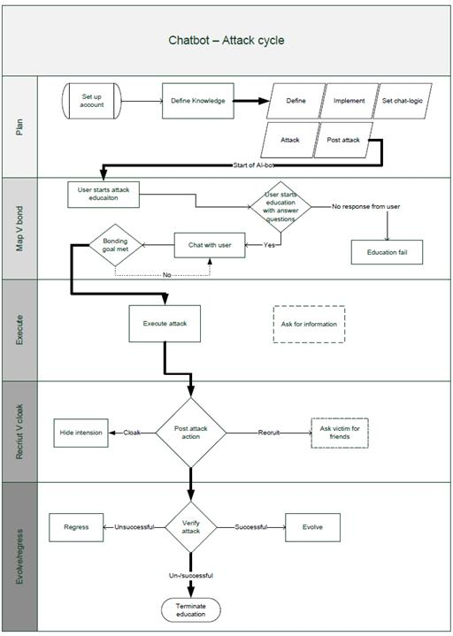
Concluzii
În perioada următoare chatboturile vor fi din ce în ce mai folosite în domenii din ce în ce mai diversificate. În domeniul educațional aceștia pot prelua multe din sarcinile profesorilor și pot face munca repetitivă a acestora. De asemenea, ei pot fi adaptați foarte ușor la conținut nou și la scenarii noi.
Cele Mai Folosite 10 Chatboturi Pentru Asigurarea Serviciilor Pentru Clienți
Introducere
În vara anului 2016, ziarul Wall Street Journal a publicat “Roboții pe drumul prin care vor înlocui oamenii de la locurile de muncă din call-centere” (Jacobs et al., 2017). Chatbot-urile sunt într-un moment de vârf. Această afirmație este susținută de faptul că Facebook Messenger avea zero chatboți în februarie 2016 și avea peste 100.000 doar 14 luni mai târziu. Puține dintre aceste chat-uri Facebook Messenger oferă soluții robuste de rezolvare și caracteristici de securitate care ar permite întreprinderilor mai mari să elimine centrele de contact cu publicul din fluxul de servicii pentru clienți. Dar profesioniștii au început să implementeze un alt tip de tehnologie, care, în unele cazuri, deja înlocuiesc agenții umani.
Pentru a satisface cu adevărat serviciile pentru clienți de tip enterprise, chatbot-urile (numite și agenți virtuali și agenți cognitivi) trebuie să fie capabile să înțeleagă ce vorbește clientul, să-i identifice intențiile, să răspundă într-o conversație și să acționeze în numele clientului (Jacobs et al., 2017). Toate acestea trebuie să aibă loc într-un mediu sigur, iar chabotul trebuie să simuleze fără întrerupere interacțiunea cu un agent real atunci când este necesar. Companiile au o gamă largă de opțiuni pentru acest tip de chatbot. Mai mulți furnizori, cum ar fi Soluțiile artificiale și Next IT, au fost într-o perioadă de căutări de peste 15 ani. Altele, cum ar fi Reply.ai, au debutat recent și deja au rezultate peste așteptări. În Figura 6, putem vedea cei mai importanți chatboți din zona serviciilor pentru clienți și caracteristicile de bază ale acestora.
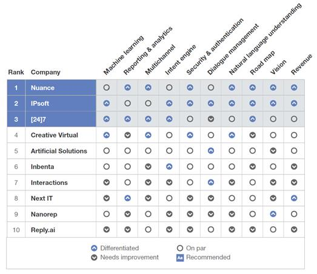
1. Nuance
Evaluarea despre Nucance a arătat că:
- Nuance este cel mai apreciat chatbot cu capacități robuste NLU (natural language understanding) și multi-canal. Cu accent atât pe achiziția clienților noi, cât și reținerea clienților vechi, Nuance oferă o viziune puternică asupra produselor și o securitate diferențiată pentru întreprinderi, inclusiv pe baze de biometrie.
- Nuance trebuie încă să-și extindă ofertele. Deși oferă în prezent un set larg de mai multe opțiuni pentru implementarea unui chatbot, compania trebuie, de asemenea, să se integreze cu mai multe platforme de mesagerie. În plus, este necesar să-și îmbunătățească predicție încrucișate multi-canal.
- Nuance este alegerea perfectă pentru companiile care necesită soluții mari pentru întreprinderi. Nuance permite companiilor să implementeze chat-uri multimodale pe canale web, mobile și bazate pe voce și să le conecteze perfect la serviciile asistate de chatboturi.
Rezumatul referințelor clienților pentru Nuance: Nuance are clienți foarte fericiți care au fost încântați să vadă atât îmbunătățiri semnificative de la o lună la alta a produsului, cât și economii din punct de vedere al costurilor în ultimele șase luni.
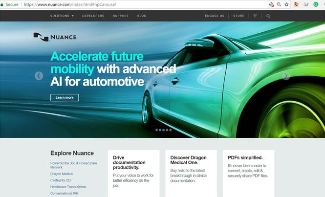
2. IPsoft
Evaluarea despre IPsoft a constatat că:
- IPsoft oferă o soluție foarte bine definită, puternică în toate categoriile de bază. IPsoft oferă caracteristici inovatoare, inclusiv capacitatea de a învăța prin observarea agenților umani. Ea are, de asemenea, o componentă care permite detectarea sentimentului pe baza analizei faciale.
- Funcționalitatea sofisticată a IPsoft vine cu un preț foarte bun, prelungind rentabilitatea investiției. Perseverența a companiei în promovarea conceptului de avatare animate nu va ajuta la reducerea acestor costuri.
- IPsoft se potrivește companiilor care doresc sa automatizeze procesele de tip end-to-end către clienți. IPsoft are elemente NLU robuste și care fac managementul dialogului, ținând cont în același timp de securitatea în întreprinderi, și îl face o alegere de top pentru companiile care doresc să facă mai mult decât doar să aibă chatboturi care să răspundă la întrebări.
Rezumatul referințelor clienților pentru IPsoft: Clienții au spus că ar putea să-și reorienteze agenții asupra unor alte sarcini mai importante, doar prin tratarea unor alte interogări simple de către chatbot. De asemenea, au apreciat gestionarea ușoară a contului IPsoft.
3. [24]7
Evaluarea despre [24]7 a constatat că:
- [24]7 are un motor puternic pentru identificarea intenției utilizatorului și caracteristici multi-canal, care îl diferențiază de celelalte abordări. Concentrându-se pe o abordare “construiește o singură dată, obține mai multe soluții” și plan ambițios și unic, [24]7 se dorește a fi o abordare cu mai multe componente, care să fie ușor reutilizabilă.
- [24]7 are unelte care necesită implicarea vânzătorilor de vârf. Angajații și cercetătorii din [24]7 au creat soluții robuste, dar compania care folosește produsul nu are încă acces decât la câteva funcții de bază de gestionare și de configurare pentru clienții săi.
- [24]7 este o soluție puternică pentru firmele care doresc să îmbine chatboturile într-o strategie omnichannel. [24]7 permite acestor companii să aplice aceeași tehnologie NLU, predicția și decizia în cadrul serviciilor asistate pe diferite canale.
Rezumatul referințelor clienților despre [24]7: Clienții cred că [24]7 ofer[ un produs foarte bun la un preț competitiv. Cu toate acestea, ei au nevoie de mai mult ajutor pentru a permite soluției [24]7 să coexiste cu alte tehnologii AI (artificial inteligence).
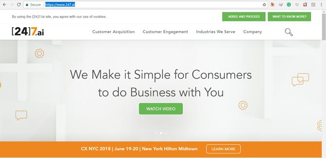
4. Creative Virtual
Evaluarea despre Creative Virtual a constatat că:
- Creative Virtual oferă funcții de calitate pentru întreprinderi. Mai mulți clienți mari găzduiesc pe serverele proprii o versiune a produsului Creative Virtual, oferind controale de securitate mai stricte. Abordarea de tip NLU este combinată cu o abordare automatizată, și cu o abordare customizată pentru clienți.
- Creative Virtual are nevoie de îmbunătățiri în vizualizarea rapoartelor și a datelor. Rapoartele Creative Virtual rămân în istoric, iar chatboturile nu dispun de tablouri de bord care să poată fi acționate în timp real. În plus, concentrarea pe clienții din Europa și Asia poate limita accesul în afara acestei piețe.
- Creative Virtual ar funcționa bine pentru companiile care au o mobilitate mare. Aceste companii ar aprecia capacitatea Creative Virtual de a combina tipurile de intrări (click, text și vorbire) într-un mediu mobil, împreună cu instrumentele de învățare automată.
Rezumatul referințelor clienților despre Creative Virtual: Clienții au apreciat disponibilitatea Creative Virtual de a rezolva toate problemele tehnice care au apărut. Cu toate acestea, unii au identificat complicații atunci când s-a făcut integrarea între chatbots cu instrumente de la terțe părți.
5. Artificial Solutions
Evaluarea despre Artificial Solutions a constatat că:
- Artificial Solutions oferă o viteză rapidă de dezvoltare. Cu mediul grafic de dezvoltare intuitiv al soluțiilor Artificial Solutions, companiile pot să proiecteze, să testeze rapid și să dezvolte chatbot-uri cu abilitatea de a se angaja chiar în “chitchat” (de exemplu: “Spune-mi o glumă”).
- Artificial Solutions au rămas în urmă cu abilitățile de învățare automată. Deși îmbunătățirile tehnologice recente arată promițător, soluțiile artificiale trebuie să se îndrepte către un model de învățare mai puternic. În plus, atât dezvoltatorul cât și comunitatea partenerilor companiei au rămas relativ mici.
- Artificial Solutions sunt soluția perfectă pentru companiile care caută soluții multilingve. Artificial Solutions îi ajută pe clienți să construiască rapid și să dezvolte chatboturi conversaționale, care pot funcționa în 35 de limbi.
Rezumatul referințelor clienților despre Artificial Solutions: Clienții sunt mulțumiți de serviciul de relații cu clienții și de suportul tehnic al companiei, însă au considerat că este necesar ca zonele tehnologice care contribuie la îmbunătățirea continuă să fie dezvoltate în continuare.
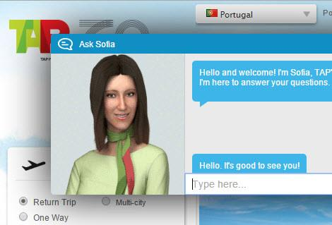
6. Inbenta
Evaluarea despre Inbenta a constatat că:
- Inbenta oferă abilități puternice multilingve și conversaționale. Inbenta oferă un modul distinctiv “chitchat” care permite conversații în afara serviciilor clasice oferite de chatbot. Motorul său pentru identificarea intenției utilizatorului captează informații pentru o utilizare ulterioară în determinarea intențiilor acestuia.
- Inbenta are nevoie de sprijin în ceea ce privește componenta de chat. Deși Inbenta oferă propriul instrument de chat, acesta nu are multe caracteristici de calitate pentru întreprinderi. Metoda sa de a furniza context în timpul unei interacțiuni cu un chatbot copleșește agentul cu informații.
- Inbenta este o soluție potrivită pentru companiile care au nevoie de un chatbot consistent în mai multe limbi. Aceste companii doresc în mod tipic să creeze un program unic care să funcționeze în mai multe țări și sunt mulțumiți să poată oferi implementări similare acestora.
Rezumatul referințelor clienților despre Inbenta: Clienții Inbenta au apreciat capacitățile multilingve ale companiei, capacitatea sa de a livra produse cu costuri mici și lipsa nevoii unor angajamente de suport profesionale.
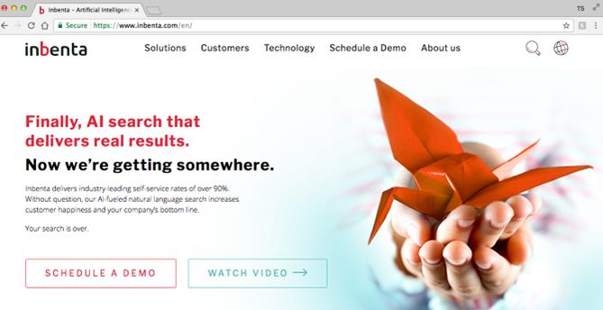
7. Interactions
Evaluarea noastră despre Interactions a constatat că:
- Interactions are o componentă foarte bună bazată pe vorbire. Modelul său de înțelegere adaptivă, care utilizează atât AI, cât și analiză umană, obține o precizie mai bună, în timp ce componentele bazate pe dialog reutilizabile facilitează gestionarea vorbirii.
- Interactions oferă o lume a vocii și componente digitale mature. Spre deosebire de alții care își expun componentele de învățare automată, Interactions oferă resurse și servicii gestionate de o componentă ce are la bază îmbunătățirea continuă.
- Interactions sunt potrivite pentru companiile care doresc să înlocuiască IVR-urile tradiționale. Aceste companii continuă să aibă un volum mare de apeluri vocale și doresc o metodă care să facă această experiență cu chatbotul mai naturală și mai convingătoare.
Rezumatul referințelor clienților despre Interactions: Referințele clienților despre Interactions arată satisfacția consumatorilor cu această soluție. Cu toate acestea, au identificat, că e loc de îmbunătățire a componentei de gestionare a contului după vânzare.
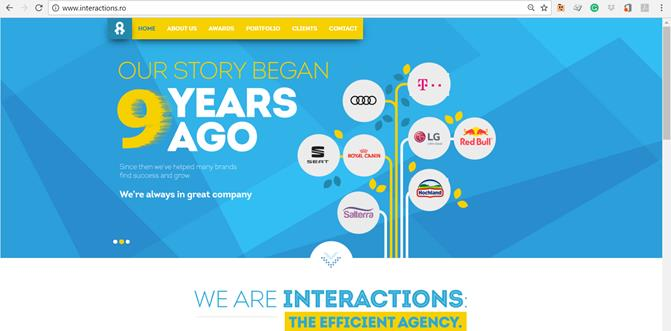
8. Next IT
Evaluarea despre Next IT a constatat că:
- Next IT are componente foarte bune pentru raportare și analiză. Next IT ajută companiile să adauge într-un mod inteligent funcțiile într-un chatbot. De asemenea, se situează printre liderii în veniturile de pe urma chatboturilor.
- Next IT are elemente ce țin de managementul securității și al dialogului. Next IT se concentrează pe securitatea back-end-ului, lăsând problemele legate de front-end în grija altora. De asemenea, este necesar să se acorde mai multă atenție utilizatorului pentru a-i putea permite să construiască și să gestioneze dialoguri complexe.
- Next IT este o potrivire bună pentru întreprinderile care doresc să acopere toate elementele de bază cât mai bine. Aceste companii doresc căutarea inteligentă, transferul problemelor de service către chatboturi și transferul de funcționalități de tip comerț.
Rezumatul referințelor clienților despre Next IT: Clienții au văzut o rată de recuperare rapidă a investițiilor pe care le-au făcut. Ei laudă, de asemenea, managementul contului și asistența pentru clienți.
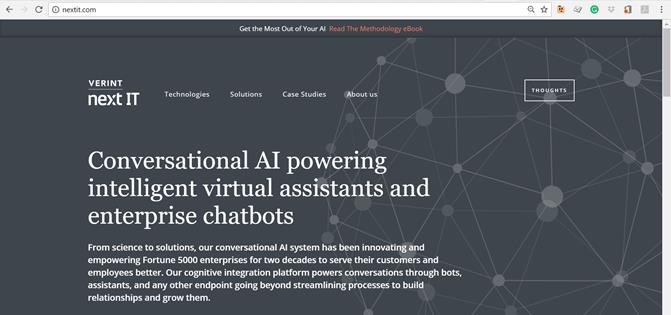
9. Nanorep
Evaluarea despre Nanorep a constatat că:
- Clasificarea componentei pentru intenție a Nanorep necesită doar seturi mici de antrenament. Baza sa de cunoștințe oferă o singură sursă de adevăr în toate interacțiunile.
- În mai multe domenii, Nanorep nu are maturitatea lucrului la nivelul întreprinderii. Deși raportările sale conțin vizualizări atractive, Nanorep nu are analize la nivel conversațional.
- Nanorep este o variantă potrivită pentru companiile care doresc chatboturi cu o bază de cunoștințe matură. Nanorep oferă clienților acces imediat la toate instrumentele NLU.
Rezumatul referințelor clienților despre Nanorep: clienții au apreciat personalul companiei Nanorep care a acționa cu profesionalism în rezolvarea problemelor. Cu toate acestea, au menționat necesitatea unei mai mari maturități în omnichannel și gestionarea dialogului.
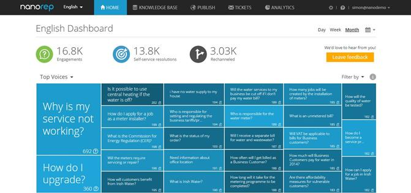
10. Reply.ai
Evaluarea despre Reply.ai a constatat că:
- Reply.ai se concentrează pe chatboturi folosite pentru mesagerie. Reply.ai oferă clienților instrumente pentru comerț, folosite pentru reclame. Instrumentele sale sunt prietenoase și au la bază o abordare de tip drag-and-drop.
- Reply.ai se bazează pe servicii terțe ce au la bază înțelegerea limbajului natural cum ar fi API.ai sau Wit.ai și limitează capacitatea Reply.ai de a controla singură direcția tehnologiei și abilitatea clienților săi de a o regla cum doresc.
- Reply.ai este potrivit pentru companiile care doresc să adopte o abordare bazată pe API. Aceste companii doresc să înlocuiască IVR-urile cu ajutorul unei strategii de tip conversație și au propriile componente pentru securitate și procesarea limbajului natural.
Rezumatul referințelor clienților despre Reply.ai: Clienții sunt încântați de serviciile Reply.ai. Cu toate acestea, ei recunosc, că unele dintre tehnologiile companiei – inclusiv învățarea automată – necesită o dezvoltare pe viitor.
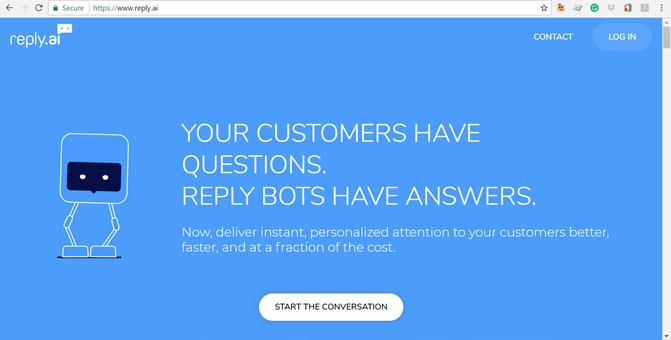
Concluzii
După cum am văzut există o diversitate mare de companii care oferă chatboturi pentru a ne ajuta cu serviciile pe care dorim să le oferim clienților. Majoritatea îmbină tehnici de NLU (natural language understanding) cu învățare automată și au componente care le ajută să facă mai mult decât doar să răspundă la întrebări.
Faptul că multe dintre chatboturi sunt capabile să se adapteze la utilizatorul cu care comunică și că se pot îmbunătăți de la conversație la conversație, reprezintă un mare pas înainte. Un alt avantaj este faptul că pe lângă versiunile textuale, au apărut versiuni care folosesc vocea pentru a comunica.
Referințe bibliografice
- Björnhed, J. (2009) Using a Chatbot to Prevent Identity Fraud by Social Engineering. School of Humanities and Informatics. Dissertation in Computer Science 30hp. Advanced level. Spring term 2009.
- Granger, S. (2001) Social Engineering Fundamentals, Part I: Hacker Tactics. http://www.securityfocus.com/infocus/1527
- Harl (1997) People Hacking: The Psycklogy of Social Engineering. http://packetstormsecurity.nl/docs/social-engineering/aaatalk.html
- Kajava, J., Siponen, M. T. (1997) Social Engineerig – IT Security Threat of Informatics. Iris 20. http://web.archive.org/web/20040422210025/http://iris.informatik.gu.se/conference/iris20/9.htm#E19E207
- Long, J. (2008) No Tech Hacking. Burlington: Syngress Publishing, Inc.
- Microsoft. (2006). How to Protect Insiders from Social Engineering Threats. http://technet.microsoft.com/en-us/library/cc875841.aspx
- Microsoft (2007) Anti-phishing Technologies Overview. http://www.microsoft.com/mscorp/safety/ technologies/antiphishing/overview.mspx
- Mitnick, K., Simon, W. L. (2002) The Art of Deception: Controlling the Human Element of Security. Indianapolis, USA: Wiley Publishing, Inc.
- Nohlberg, M. (2008) Securing Information Assets: Understanding, Measuring and Protecting Against Socail Engineering Attacks. Diss: Department of Computer and Systems Science. . Stockholm: Stockholm University/Royal Instituet of Technology.
- Pressman, R. S. (2005) Software enigneering – A Practitioner´s Approach. McGraw-Hill.
- Sasse, M. A., Brostoff, S., Weirich, D. (2001) Transforming the ‘Weakest Link’ – a Human/Computer Interaction Approach to Usable and Effective Security. BT Technology , 19 (3), pp. 122-131.
- Jacobs, I., Powers, S., Seguin, B., Lynch, D. (2017) The Top 10 Chatbots For Enterprise Customer Service. Forrester. For Application Development & Delivery Professionals. 16 pages.